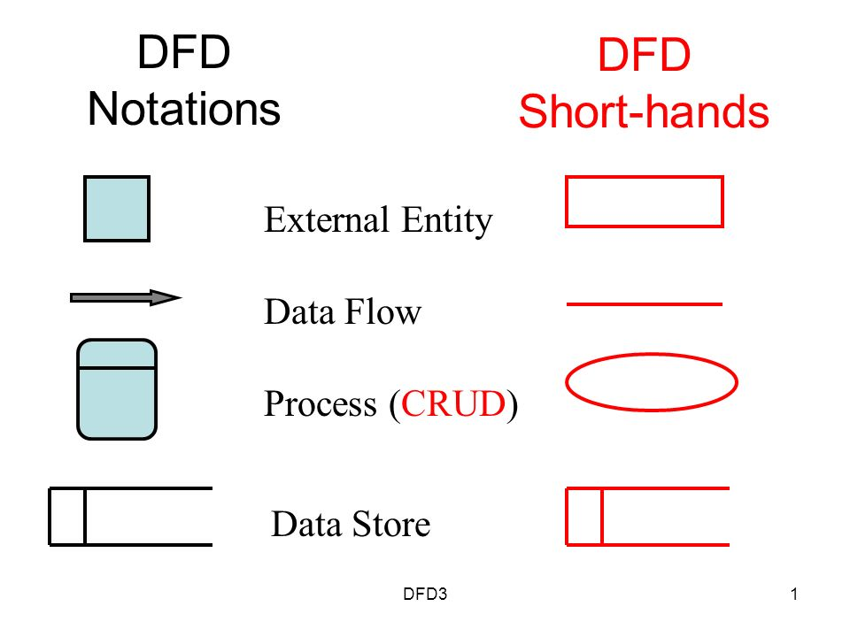

The traditional visual representation of how information moves through a system is a data flow diagram (DFD). A clear and understandable DFD can visually represent the appropriate amount of the system requirement. It can be done manually, automatically, or even both.
It demonstrates how information impacts the system, what changes the data, and where information is stored.
A DFD's goal is to outline the limitations and capabilities of a system as a whole. It can be utilized as a communication tool between a system analyst and any participant in the sequence that serves as the foundation for system redesign. The DFD is also known as a bubble chart or data flow graph.
A context diagram is a top-level data flow diagram (also called "Level 0"). There is only one process node ("Process 0") in it, and it generalizes how the entire system interacts with outside entities.
One process, which represents its complete system, is present in the context diagram, which is the highest level in a data flow diagram. The process is given the numb external entities are shown on the context diagram, as well as major data flow to and from them. The diagram does not contain any data stores.
An Entity-Relationship (ER) Diagram is a flowchart form showing of flowchart that shows the relationships between "entities" like people, things, or concepts within a system. ER Diagrams are most frequently used in the disciplines of software engineering, business information systems, education, and research to build or troubleshoot relational databases. They are known as ERDs or ER Models, and they use a predefined collection of symbols that represent the interconnectedness of entities, relationships, and their qualities. These symbols include rectangles, diamonds, ovals, and connecting lines. They have verbs for relationships as nouns for entities, matching the grammatical framework.
Data structure diagrams (DSDs), which emphasize interactions between elements within entities rather than relationships between things themselves, are linked to ER diagrams. ER diagrams are frequently combined with data flow diagrams (DFDs), which depict the information flow for systems or processes.
>
Entity:
An entity is a piece of data or an item. In an ER diagram, an entity is shown as a rectangle.
For example:
As numerous students attend a single college, the two entities Student and College in the accompanying ER diagram have a many-to-one relationship. Focus on entities for the moment; relationships will be covered in more detail later.one relationship. Focus on entities for the moment; relationships will be covered in more detail later.
Weak Entity:
An entity that cannot be uniquely identified by its own attributes and relies on the relationship with other entity is called weak entity
Attribute:
An attribute describes the property of an entity. An attribute is represented as Oval in an ER diagram. There are four types of attributes:
1.Key attribute
2. Composite attribute
3. Multivalued attribute
4. Derived attribute
Relationship:
A relationship is represented by diamond shape in ER diagram; it shows the relationship among entities. There are four types of relationships:
1. One to One
2. One to Many
3. Many to One
4. Many to Many